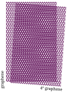

Computational materials theory
James G. McHugh
I work on computational materials theory for two-dimensional materials and van der Waals heterostructures, with a focus on how stacking, strain, curvature, defects and interfaces shape electronic behaviour.
Moiré structure
04°
